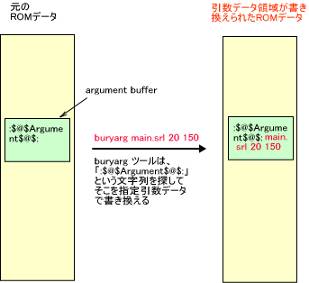
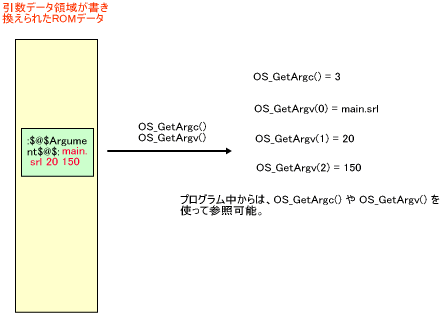

In NITRO-SDK, an area for argument data is set up in the ROM image. By rewriting this section at startup, you can pass the parameters that can be used as argc and argv format arguments of the C language. The ROM image file is rewritten at startup, so you can test the program under multiple conditions without having to recompile.
buryarg is a tool for writing argument data to the argument data area for the specified binary data.
% buryarg [OPTION]... NITROBINFILE [argument]...
NITROBINFILE is the original ROM file for rewriting. srl and sbin files can be specified. If an nlf file is specified, the nlf file is analyzed and the ARM9 static module file is used as the input file.
If the -r or --remain options are specified, the original file will remain. By default, the original file will be modified. So if you don't want to change the original file, specify this option. The alias filename is the original filename plus .argAdded . When the output file is selected with -o option, the original file will not be changed, even when this option is not specified.
The -o and --output options take arguments. With this option, the output file is specified as in the following: -o=dest.srl or -o dest.srl . Do not specify the same file as the original file for the output file. Also, if "-" (minus) is specified as the output file, output goes to standard output. ( Specify as: -o-. ) See --stdout, which is explained below.
--stdout is the same as specifying -o-. It outputs to standard output.
The -f and --file options take arguments. These options are for specifying a file as the data to replace. Specify as: -f=rep.dat or -f rep.dat.
If the -q or --quiet option is specified, quiet mode is used and messages other than error messages will not be output.
If the -v or --verbose options are specified, detailed descriptions of operations are displayed.
The -h or --help options display simple instructions.
The -d or --debug options are for debugging. They dump the data that is to be replace.
The --version option displays the command version.
A text string that indicates the position of the argument data is contained in the argument data area of the ROM data after compiling. buryarg searches for this text string in the ROM and then reads the argument data. As the text string that indicates the position is not rewritten, argument data can be rewritten over and over again to the same ROM data.

The argument area's data can be accessed from your program by using OS_GetArgc() and OS_GetArgv().

Caution Be careful to avoid the following errors.
ÅEYou specified the same file as the input file with the-ooption.
-> If you want to overwrite it, the operation is done by default.
∑ You rewrote the argument data for the srl file. Then started up from the nlf file.
-> If started up from an nlf file, the module written therein will be read. Specify the nlf file with this command.
- You rewrote the argument data for the nlf file. Then started up the srl file.
-> Please rewrite the argument data for the srl file.
∑You tried to rewrite the argument data on an image that does not have an argument data area.
-> ROM images and modules created with the old SDK do not have an area to store the argument data. When this command is executed for these images, it will display an error that indicates the text string for the argument data area could not be found, and then the command terminates.
-You tried to rewrite the argument data on a FINALROM build image.
-> The FINALROM build image does not have an area to store the argument data.
$NitroSDK/tools/bin/buryarg.exe
OS_GetArgc, OS_GetArgv, OS_GetOpt*
08/30/2005 Added OS_GetOpt* to "See Also." Added --stdout.
07/22/2005 Support for nlf files.
07/21/2005 Initial version.
CONFIDENTIAL